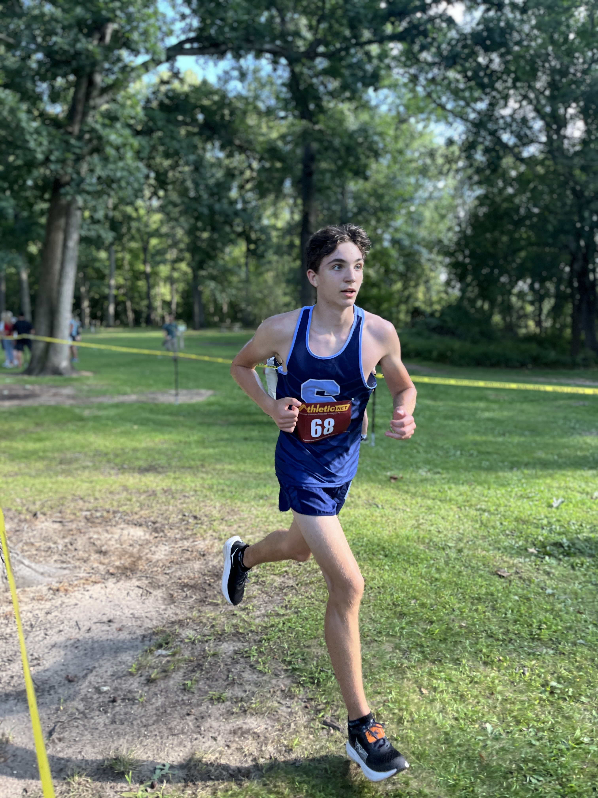
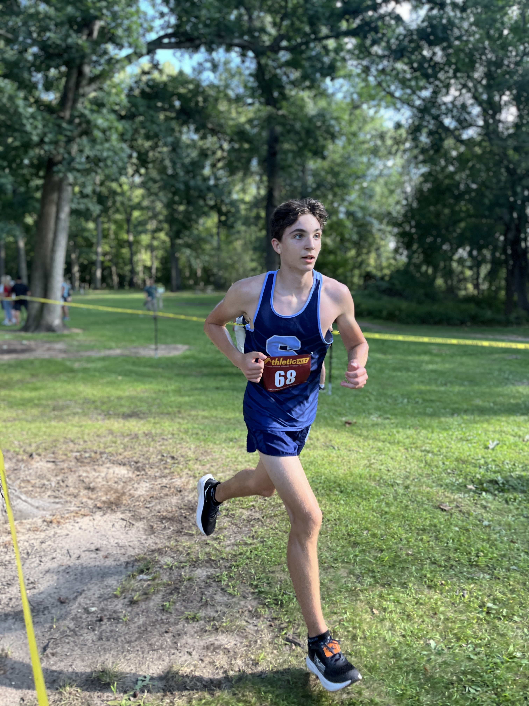

Athlete Results
| Name | Grade | Time | Place | Team | Profile Picture |
|---|---|---|---|---|---|
| Micali Teeple | 10 | 22:42.90 | 32. | Grand Blanc |  |
| Izzy MacCaughan | 12 | 23:29.00 | 44. | Fenton |  |
| Madilyn Mccormick | 9 | 23:55.60 | 51. | Mason |  |
| Baneen Al-Heleal | 12 | 24:31.00 | 62. | Ypsilanti Community |  |
| Lianne Liu | 12 | 25:31.00 | 78. | Ann Arbor Huron |  |


 
